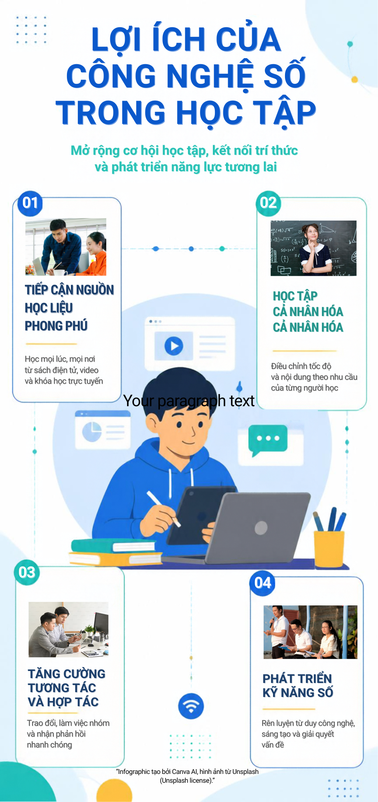

Giới thiệu bản thân
Tôi là sinh viên ngành Truyền thông đa phương tiện tại Đại học Cần Thơ. Tôi thực hiện các sản phẩm này để vận dụng kiến thức đã học, rèn luyện kỹ năng sáng tạo nội dung và chia sẻ lợi ích của công nghệ số trong học tập.
- Họ và tên
- NGÔ NGỌC HÂN
- MSSV
- B2605339
- Lớp
- DI26D1A2
- Ngành
- TRUYỀN THÔNG ĐA PHƯƠNG TIỆN
- Trường
- ĐẠI HỌC CẦN THƠ
Sản phẩm 1 – File PDF
Sản phẩm 2 – Infographic
Infographic tóm tắt những lợi ích nổi bật của công nghệ số trong học tập.
